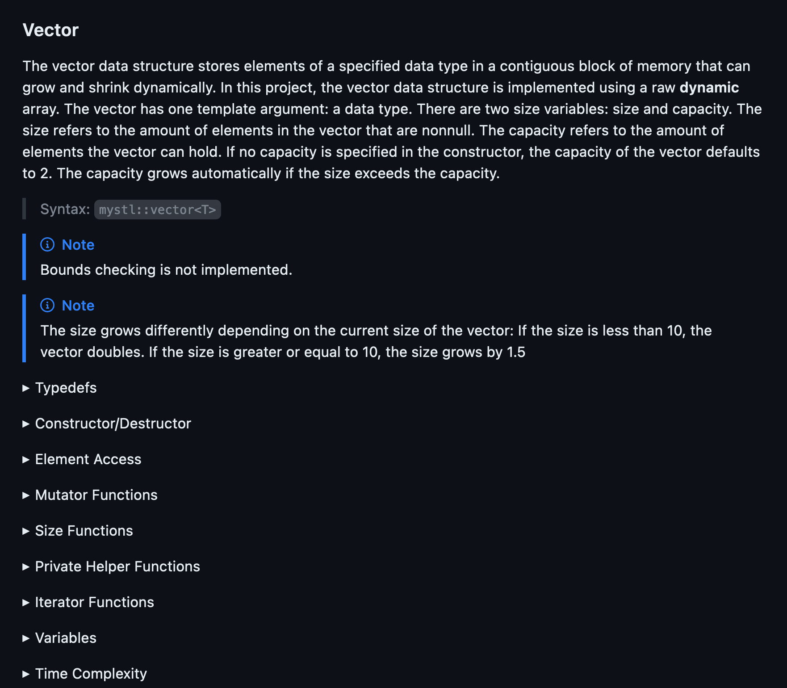
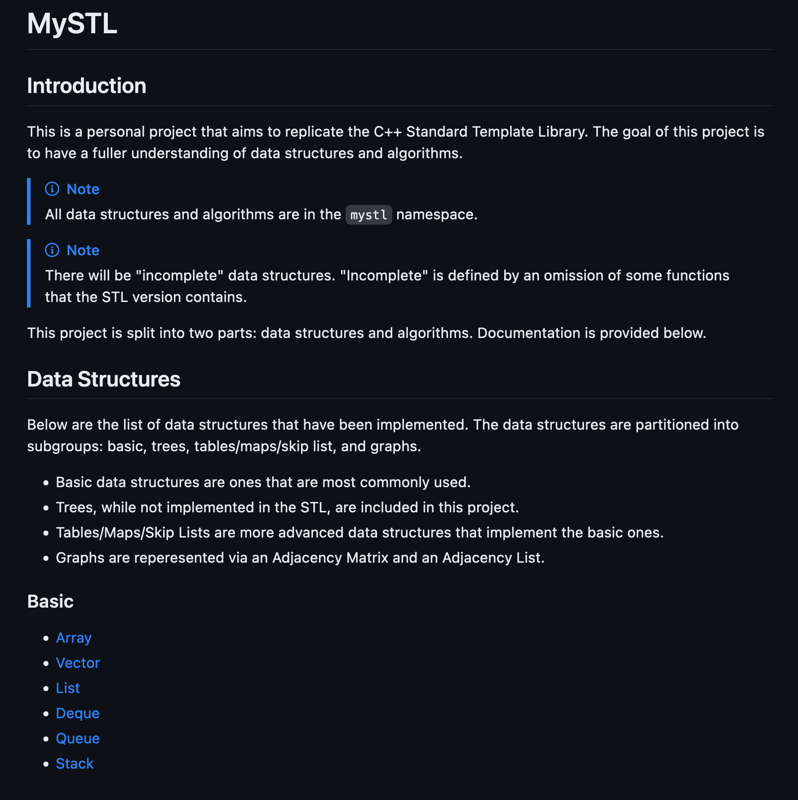
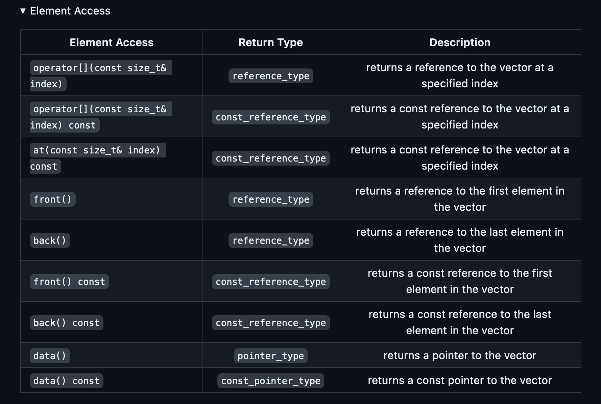

Projects
I have developed projects using C, Go, and many other languages! Below is a list of bigger projects I have worked on attached with a quick summary and photo gallery. Visit my GitHub to see the full catalog!


The EEG signal classification research project compared multiple deep learning models on the BCI Competition IV Dataset 2a. We explored several Convolutional Neural Networks (CNNs) and hybrids such as Convolutional Recurrent Neural Networks (CRNNs) and Convolutional Transformers (Conformers). We were able to surpass the traditional benchmark by over 1.5 percent for all models, achieving a peak accuracy of 74.97 percent test accuracy over 50 epochs. I had a ton of fun designing the models and building the objective function for a hyperparameter search.
-

The Convolutional Transformer (Conformer) architecture used.
-

Training and validation accuracy trajectories over 50 epochs for the CNN architecture.
-

A snippet of the objective function for a hyperparameter search.
-

Training and validation loss trajectories over 50 epochs for the CNN architecture.

The TCP Network Simulator simulated major network traffic/unreliability. The goal was to build TCP; that is, implement Reliable Data Transfer (RDT) and Congestion Control (CC) over UDP in C. The files were transferred through an intermediate network socket (built in Python) that simulated random packet loss and network congestion. I had a ton of fun building this project since I was able to implement a variety of data structures (e.g. a dynamic heap) and algorithms (e.g. congestion control) to optimize transfer speeds.
-

Server-side multithreaded writes.
-

Multithreaded write helper functions.
-

A snippet of the TCP reliable data transfer (RDT) recovery algorithm.
-

Client-side packet handling.


The CPU Simulator project was my first introduction into Systems Programming. It is meant to teach the basic workflow of a single-cycle CPU works (Fetch, Decode, Execute, Memory, Write-back). I implemented arithmetic operations (addi, add, sub, xor, sra), memory manipulation (lw, sw), and control flow instructions (jalr, beq).
-

Memory manipulation instruction handling (I/S-type operations).
-

Arithmetic instruction handling (R-type and I-type [not shown]) using function pointers.
-

Control flow instruction handling (B/J-type operations).
The HTTP Server project was my first introduction to low-level Network Programming. It is meant to introduce the basics of the HTTP/1.0 Protocol. I implemented local file serving as well as remote file serving via a proxy server.
-

Proxy server handling.
-

Local file handling.
-

URL cleaning algorithm.
The memory driver project was implemented using an exclusive write-no-allocate/write-through design with a Direct-Mapped (DM) L1, Fully-Associative (FA) Victim, and 8-way Set-Associative (8-SA) L2 caches. I analyzed the efficiency of this particular combination by measuring the Average Access Time (AAT) across a variety of datasets.
-

A snippet of the load word operation.
-

Simplified cache layout.
-

A snippet of the logic to update the LRU for each element in the L1 cache.
-

A snippet of evict() function.
-

A snippet of the store word operation.


The UCLA ClubHub is a centralized website for club information at UCLA using NextJS (React) and FirebaseDB. The website gives Bruins easy access to club information, events, and membership status. I integrated the UCLA Single Sign-On Protocol to ensure exclusive access to UCLA Bruins and built a web scraper to migrate over 2500+ individual club sites using Puppeteer into our database for faster response times when fetching data.
-

Simple homepage UI.
-

UI change on login, including the clubs the logged in user is a part of.
-

Individual club page UI.
-

Event calendar to track upcoming events.

The MySTL project is an educational software library written in C++ that provides clear documentation on the implementation of fundamental data structures (e.g. arrays, graphs, etc.) as well as comprehensive explanations of key algorithms (e.g. greedy, divide and conquer, etc.). It is designed for students taking a Data Structures and Algorithms (or an equivalent) course, but it is a helpful resource for anyone in the field! I provide a deep dive into each of these data structures and algorithms, emphasizing defining attributes and analyzing time complexities of every operation.
-

Summary of the vector data structure.
-

Table of contents of data structures.
-

A code snippet of the implementation for emplace().
-

Easy to follow documentation of the vector data structure.


The Bulk Club project is a cross-platform desktop application developed in C++ using the Qt framework and MySQL for database management. The application tracks membership information and sales within a simulated warehouse supermarket. Utilizing the SCRUM project management framework, I took on the role of Product Owner and led a team through three 3-week sprints, overseeing application design and development.
-

Simple store manager homepage UI.
-

Registration page for new members.
-

Determining members that should change member levels.
-

Simple shopping cart UI.
The College Touring project is a cross-platform desktop application developed in C++ using the Qt framework and MySQL for database management. The application allows prospective college students to plan a college tour! The core functionalities of this application include graph traversals (e.g. DFS, BFS, A*, etc.) to optimize the college visitation order as well as the ability to generate a Minimum Spanning Tree (MST) to enhance the touring experience.
-

An MST starting at UCI.
-

DFS traversal of the colleges starting at UCI.
-

Simple homescreen UI.